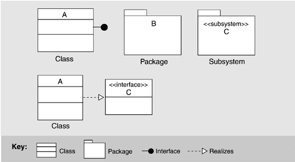
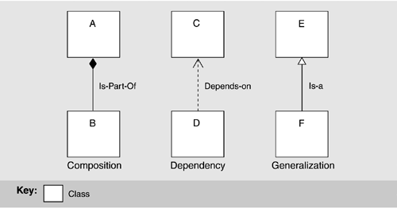
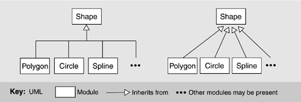
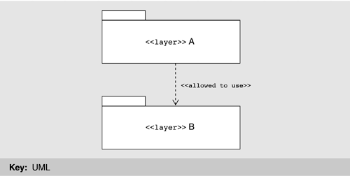
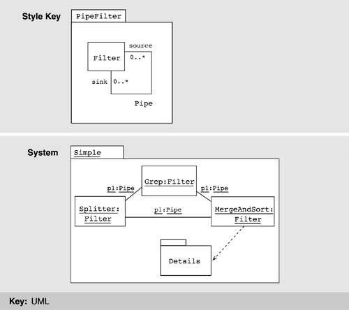
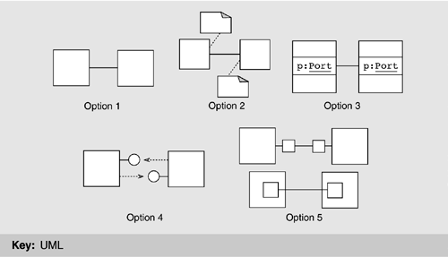
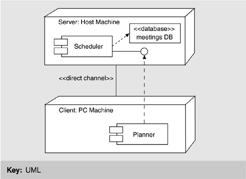

| [ Team LiB ] |
|
9.6 Unified Modeling LanguageWe have concentrated on the kind of information that should be included in architecture documentation. Architecture in some sense expresses what is essential about a software system, and that essence is independent of languages and notations to capture it. Nevertheless, today the Unified Modeling Language (UML) has emerged as the de facto standard notation for documenting a software architecture. However, it must be said that UML makes its main contribution in a view's primary presentation, and its secondary contribution in the behavior of an element or group of elements. It is up to the architect to augment the UML pictures with the necessary supporting documentation (the element catalog, the rationale, and so forth) that a responsible job requires. UML provides no direct support for components, connectors, layers, interface semantics, or many other aspects of a system that are supremely architectural. Still, in most cases we can use the constructs that UML does offer to achieve satisfactory effects, at least in crafting the primary presentations of architectural views. We begin by discussing module views. MODULE VIEWSRecall that a module is a code or implementation unit and a module view is an enumeration of modules together with their interfaces and their relations. InterfacesFigure 9.4 shows how module interfaces can be represented in UML. UML uses a "lollipop" to denote an interface, which can be appended to classes and subsystems, among other things. UML also allows a class symbol (box) to be stereotyped as an interface; the open-headed dashed arrow shows that an element realizes an interface. The bottom of the class symbol can be annotated with the interface's signature information: method names, arguments, argument types, and so forth. The lollipop notation is normally used to show dependencies from elements to the interface, while the box notation allows a more detailed description of the interface's syntax, such as the operations it provides. ModulesUML provides a variety of constructs to represent different kinds of modules. Figure 9.5 shows some examples. UML has a class construct, which is the object-oriented specialization of a module. Packages can be used in cases where grouping of functionality is important, such as to represent layers and classes. The subsystem construct can be used if a specification of interface and behavior is required. Figure 9.5. Examples of module notations in UML Figure 9.6 shows how the relations native to module views are denoted using UML. Module decomposition relies on the "is-part-of" relation. The module uses view relies on the dependency relation, and the module class view relies on the generalization, or "is-a" relation (also called "inheritance"). Figure 9.6. Examples of relation notations in UML. Module B is part of module A, module D depends on module C, and module F is a type of module E. AggregationIn UML, the subsystem construct can be used to represent modules that contain other modules; the class box is normally used for the leaves of the decomposition. Subsystems are used both as packages and as classifiers. As packages, they can be decomposed and hence are suitable for module aggregation. As classifiers, they encapsulate their contents and can provide an explicit interface. Aggregation is depicted in one of three ways in UML:
In UML, composition is a form of aggregation with implied strong ownership—that is, parts live and die with the whole. If module A is composed of modules B and C, then B or C cannot exist without A, and if A is destroyed at runtime, so are B and C. Thus, UML's composition relation has implications beyond the structuring of the implementation units; the relation also endows the elements with a runtime property. As an architect, you should make sure you are comfortable with this property before using UML's composition relation. GeneralizationExpressing generalization is at the heart of UML in which modules are shown as classes (although they may also be shown as subsystems). Figure 9.8 shows the basic notation available in UML. Figure 9.8. Documenting generalization in UML with two line styles The two diagrams in Figure 9.8 are semantically identical. UML allows an ellipsis (…) in place of a submodule, indicating that a module can have more children than shown and that additional ones are likely. Module Shape is the parent of modules Polygon, Circle, and Spline, each of which is a subclass, child, or descendant of Shape. Shape is more general, while its children are specialized versions. DependencyThe basic notation for dependency was shown in Figure 9.6. The most architecturally significant manifestation of dependency is found in layers. Sadly, UML has no built-in primitive corresponding to a layer. However, it can represent simple layers using packages, as shown in Figure 9.9. These are general-purpose mechanisms for organizing elements into groups. UML has predefined packages for systems and subsystems. We can introduce an additional package for layers by defining it as a package stereotype. A layer can be shown as a UML package with the constraints that it groups modules together and that the dependency between packages is "allowed to use." We can designate a layer using the package notation with the stereotype name <<layer>> preceding the layer name, or introduce a new visual form, such as a shaded rectangle. Figure 9.9. A simple representation of layers in UML COMPONENT-AND-CONNECTOR VIEWSThere is no single preferred strategy to document component-and-connector (C&C) views in UML, but a number of alternatives. Each alternative has its advantages and disadvantages. One natural candidate for representing component-and-connector types begins with the UML class concept. Figure 9.10 illustrates the general idea using a simple pipe-and-filter system. Here, the filter architectural type is represented as the UML class Filter. Instances of filters, such as Splitter, are represented as corresponding objects in an object instance diagram. To provide a namespace boundary, we enclose the descriptions in packages. The representation of MergeAndSort, denoted Details, would be shown as another package elsewhere. Figure 9.10. Types as classes, and instances as objects, exemplified with a simple pipe and filter We now take a closer look at this strategy. ComponentsThe type/instance relationship in architectural descriptions is a close match to the class/object relationship in a UML model. UML classes, like component types in architectural descriptions, are first-class entities and are rich structures for capturing software abstractions. The full set of UML descriptive mechanisms is available to describe the structure, properties, and behavior of a class, making this a good choice for depicting detail and using UML-based analysis tools. Properties of architectural components can be represented as class attributes or with associations; behavior can be described using UML behavioral models; and generalization can be used to relate a set of component types. The semantics of an instance or type can also be elaborated by attaching one of the standard stereotypes; for example, the «process» stereotype can be attached to a component to indicate that it runs as a separate process. Note that the relationship between MergeAndSort and its substructure is indicated using a dependency relation. InterfacesInterfaces to components, sometimes called ports, can be shown in five ways, as shown in Figure 9.11, described in increasing order of expressiveness. However, as expressiveness rises so does complexity, so you should pick the first strategy that will serve your purposes.
Figure 9.11. Five ways to represent interfaces to components (ports) ConnectorsThere are three reasonable options for representing connectors. Again, the choice is between expressiveness and semantic match on the one hand and complexity on the other.
SystemsIn addition to representing individual components and connectors and their types, we also need to encapsulate graphs of components and connectors: systems. Three options are available.
ALLOCATION VIEWSIn UML, a deployment diagram is a graph of nodes connected by communication associations. Figure 9.13 provides an example. Nodes may contain component instances, which indicates that the component lives or runs on the node. Components may contain objects, which indicates that the object is part of the component. Components are connected to other components by dashed-arrow dependencies (possibly through interfaces). This indicates that one component uses the services of another; a stereotype may be used to indicate the precise dependency if needed. The deployment type diagram may also be used to show which components may run on which nodes, by using dashed arrows with the stereotype «supports». Figure 9.13. A deployment view in UML A node is a runtime physical object that represents a processing resource, generally having at least a memory and often processing capability as well. Nodes include computing devices but also human or mechanical processing resources. Nodes may represent types of instances. Runtime computational instances, both objects and components, may reside on node instances. Nodes may be connected by associations to other nodes. An association indicates a communication path between them. The association may have a stereotype to indicate the nature of the communication path (for example, the kind of channel or network). The nesting of symbols within the node symbol signifies a composition association between a node class and constituent classes or a composition link between a node object and constituent objects. |
| [ Team LiB ] |
|